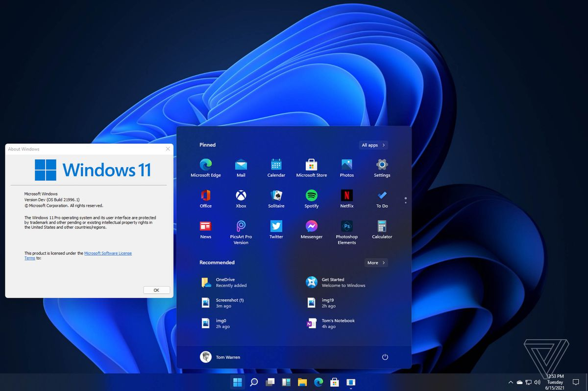

Windows 11 build 21996.1 x64 + Activator [TheWindowsForum] Windows 11 has a completely new design. Microsoft clearly needs a good reason to reverse its past claims and still ditch Windows 10 by introducing a new operating system number. And a completely new design is great for that. The main part of this announcement is a significant user interface change. As we know, a significant portion of the UX changes will be borrowed from the Windows 10X shell, and Windows 10X is not coming to market. Right angles will disappear, they will be replaced by fillets. In truth, insiders and concept designers disagree on this point - some are confident that Microsoft will not change its traditions and will keep right angles, while others are convinced that in 2021 Microsoft will follow the fashion for fillets. There will be a translucent background with blur everywhere. There is disagreement on the web about the island style of displaying windows, the design of the corners and the levitation effect of the menu, but almost everyone is unanimous about the transparency of the windows. The vast majority of leaks and design renders show transparency and blur in all windows, be it at least the Start menu or Explorer. Technical Details and System Requirements The minimum requirements for installing Win 11 are the same as Windows 10. Processor: 1 GHz Memory (RAM): 1 GB (For 32 Bit), 2 GB (For 64 Bit) Minimum Space: 16 GB Free Hard Disk Space Included versions: - Windows 11 Home - Windows 11 Home N - Windows 11 Home single language - Windows 11 Education - Windows 11 Education N - Windows 11 Pro - Windows 11 Pro N - Windows 11 Pro Education - Windows 11 Pro Education N - Windows 11 Pro for Workstations - Windows 11 Pro N for Workstations +----------------+ | How to use | +----------------+ 1 Open _ReadMe.txt and read Instructions TheWindowsForum / ThumperDC / TechTools